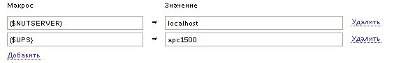
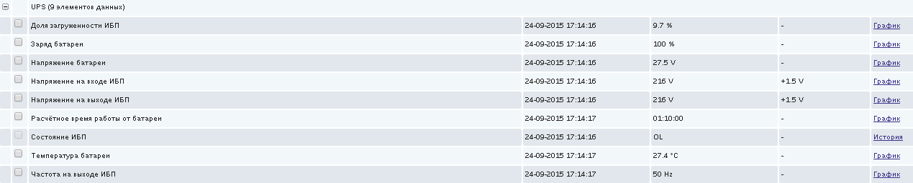
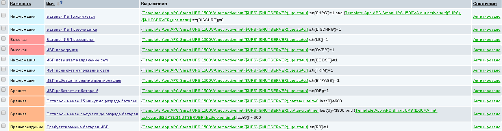

Благодаря Курбан-байраму на этой неделе появилось немного времени попробовать разобраться с ошибкой сегментации памяти в драйвере usbhid-ups из системы NUT.
Ставим nut-server и nut-client из репозитория:
# apt-get install nut-server nut-client
На странице руководства usbhid-ups описаны настройки, позволяющие привязать драйвер к строго определённому устройству. Можно указать настройки vendor, vendorid, product, productid, bus, serial.
Ищем идентификатор производителя и модели нашего ИБП при помощи lsusb. У меня ИБП в выводе этой программы выглядит так:
Bus 004 Device 006: ID 051d:0002 American Power Conversion Uninterruptible Power Supply
Теперь при помощи команды lsusb -vd 051d:0002 посмотрим другую информацию об ИБП. Я нашёл там серийный номер - он полезен, если к компьютеру подключено два ИБП одной и той же модели.
Используя полученную информацию, настроим драйвер в файле /etc/nut/ups.conf:
[apc1500]
driver = usbhid-ups
port = auto
vendorid = 051d
productid = 0002
serial = AS0508120261
Теперь драйвер можно попробовать запустить вручную следующей командой:
# /lib/nut/usbhid-ups -a apc1500
В Debian Jessie программа завершается ошибкой сегментации. В Debian Stretch эта ошибка уже исправлена, поэтому в случае Debian Jessie можно сразу перейти к разделу "Исправление прав доступа к устройству" ниже.
Найти ошибку мне удалось с помощью программы ltrace. Запустим драйвер под управлением этой программы:
# ltrace /lib/nut/usbhid-ups -a apc1500
Последние строчки вывода ltrace выглядят следующим образом:
strlen("Back-UPS ES 525") = 15
strncmp(nil, "Back-UPS ES 525", 15 <no return ...>
--- SIGSEGV (Segmentation fault) ---
+++ killed by SIGSEGV +++
Как видно, ошибка сегментации происходит потому, что происходит попытка сравнить строки. Первый аргумент функции сравнения строк strncmp имеет значение NULL. Используя это значение как указатель на область памяти, функция пытается обратиться по адресу, которого нет в адресном пространстве программы. Модуль управления памяти (MMU) генерирует прерывание о недоступности страницы, управление передаётся ядру операционной системы. Операционная система ищет затребованную память в каталоге страниц перемещённых в раздел подкачки и в списке файлов, отображаемых в память. Страницу не удаётся найти ни там ни там и ядро операционной системы завершает программу.
Скачаем и распакуем исходные тексты системы NUT:
# cd /root # apt-get source nut-server
Перейдём в каталог с распакованными файлами и поищем в них строку "Back-UPS ES 525":
# cd nut-2.7.2 # grep -R "Back-UPS ES 525" * drivers/apc-hid.c: /* Back-UPS ES 525 overflows on ReportID 0x0c drivers/apc-hid.c: "Back-UPS ES 525",
Строка используется в файле drivers/apc-hid.c. Откроем его и посмотрим, можно ли исправить проблему. Проблема находится в функции general_apc_check:
static void *general_apc_check(USBDevice_t *device)
{
int i = 0;
/* Some models of Back-UPS overflow on some ReportID.
* This results in some data not being exposed and IO errors on
* WIN32, causing endless reconnection or driver's failure */
while( tweak_max_report[i] != NULL ) {
if(!strncmp(device->Product, tweak_max_report[i],
strlen(tweak_max_report[i]))) {
max_report_size = 1;
return NULL;
}
i++;
}
return NULL;
}
То есть ошибка сегментации памяти происходит из-за попытки обратиться к области памяти, на которую указывает device->Product. Исправим это, пропуская цикл, если значение этого указателя равно NULL:
static void *general_apc_check(USBDevice_t *device)
{
int i = 0;
/* Some models of Back-UPS overflow on some ReportID.
* This results in some data not being exposed and IO errors on
* WIN32, causing endless reconnection or driver's failure */
if (device->Product == NULL) {
return NULL;
}
while( tweak_max_report[i] != NULL ) {
if(!strncmp(device->Product, tweak_max_report[i],
strlen(tweak_max_report[i]))) {
max_report_size = 1;
return NULL;
}
i++;
}
return NULL;
}
Узаконим это изменение. Во-первых, внесём новую запись в changelog:
# dch -i
В открывшемся редакторе добавляем запись:
nut (2.7.2-4.1) UNRELEASED; urgency=medium * Fixed segmentation fault in function general_apc_check -- Vladimir Stupin <vladimir@stupin.su> Thu, 24 Sep 2015 13:48:20 +0500
Теперь фиксируем изменения в исходном тексте при помощи команды:
# dpkg-source --commit
Патч назовём general_apc_check_segfault_fixed, в заголовок впишем комментарии к патчу:
Description: Fixed segmentation fault in function general_apc_check Fixed segmentation fault in function general_apc_check . nut (2.7.2-4.1) UNRELEASED; urgency=medium . * Fixed segmentation fault in function general_apc_check Author: Vladimir Stupin <vladimir@stupin.su>
Осталось собрать новые пакеты. Установим зависимости, необходимые для сборки, а затем соберём пакеты:
# apt-get build-dep nut-server # dpkg-buildpackage -us -uc -rfakeroot
В каталоге выше, на одном уровне с nut-2.7.2 появятся новые файлы:
libups-nut-perl_2.7.2-4.1_all.deb nut_2.7.2-4.1_all.deb nut_2.7.2-4.1_amd64.changes nut_2.7.2-4.1.debian.tar.xz nut_2.7.2-4.1.dsc nut_2.7.2.orig.tar.gz nut-cgi_2.7.2-4.1_amd64.deb nut-client_2.7.2-4.1_amd64.deb nut-doc_2.7.2-4.1_all.deb nut-ipmi_2.7.2-4.1_amd64.deb nut-monitor_2.7.2-4.1_all.deb nut-powerman-pdu_2.7.2-4.1_amd64.deb nut-server_2.7.2-4.1_amd64.deb nut-snmp_2.7.2-4.1_amd64.deb nut-xml_2.7.2-4.1_amd64.deb python-nut_2.7.2-4.1_all.deb
Установим собранные нами пакеты nut-server и nut-client:
# dpkg -i nut-server_2.7.2-4.1_amd64.deb nut-client_2.7.2-4.1_amd64.deb
Попробуем запустить исправленный драйвер:
# /lib/nut/usbhid-ups -a apc1500
На этот раз ошибки сегментации нет, а драйвер самостоятельно завершает работу, сообщая об ошибке:
Can't claim USB device [051d:0002]: could not detach kernel driver from interface 0: Operation not permitted
Как выяснилось, дело в правах доступа к файлу устройства /dev/bus/usb/004/007, под которым доступен ИБП. К этому устройству должен иметь доступ пользователь или группа nut. Применим решение, найденное в обсуждении Trouble starting Network UPS Tools with a Eaton 3S UPS. Для этого создадим файл /etc/udev/rules.d/90-nut-ups.rules со следующим содержимым:
ACTION=="add", SUBSYSTEM=="usb", ATTR{idVendor}=="051d", ATTR{idProduct}=="0002", MODE="0660", GROUP="nut"
Чтобы настройки вступили в силу, перезагрузим udevd:
# /etc/init.d/udev reload
Теперь отсоединим USB-кабель, которым ИБП соединён с компьютером, и вставим его обратно. Права доступа должны исправиться.
Откроем файл с настройками NUT-сервера /etc/nut/upsd.conf и впишем в него строчку:
LISTEN 127.0.0.1 3493
Откроем файл со списком пользователей NUT-сервера /etc/nut/upsd.users:
[admin]
password = admin_password
actions = SET
instcmds = ALL
[upsmon]
password = upsmon_password
upsmon master
Откроем файл /etc/nut/nut.conf и заменим режим работы NUT-сервера с none на standalone:
MODE=standalone
Теперь включим и запустим NUT-сервер:
# systemctl enable nut-server.service # systemctl start nut-server.service
Запустился ли NUT-сервер, можно посмотреть при помощи следующей команды:
# systemctl status nut-server.service
Простейший клиент позволяет просматривать текущие параметры ИБП:
$ upsc apc1500
Посмотреть значение какого-то одного конкретного параметра можно указав дополнительно его имя:
$ upsc apc1500 ups.beeper.status
Кроме того, имеется более сложный клиент, который позволяет не только просматривать настройки, но и выполнять команды. Список доступных команд можно увидеть вот так:
$ upscmd -l -u admin -p admin_password apc1500
Например, вот так можно отключить на ИБП звуковой сигнал:
$ upscmd -u admin -p admin_password apc1500 beeper.disable
Можно убедиться в том, что звуковой сигнал действительно отключен:
$ upsc apc1500 ups.beeper.status
Кроме поддержки моделей ИБП разных производителей, NUT выгодно отличается от apcupsd именно возможностью выполнять команды на ИБП. Можно, например, с помощью соответствующей команды протестировать всю процедуру отключения системы.
Однако, мы отклонились от темы. Настроим клиент мониторинга, который будет заниматься слежением за состоянием ИБП и правильным завершением работы при отсутствии электричества и полном разряде батарей. Откроем файл /etc/nut/upsmon.conf и впишем в него следующие настройки:
# Описание ИБП, за которым нужно наблюдать MONITOR apc1500@localhost 1 upsmon upsmon_password master # Команда, которую нужно выполнить перед пропаданием питания от ИБП SHUTDOWNCMD "/sbin/shutdown -h +0"
Команда нужна именно такая, чтобы компьютер включился при подаче питания. Для этого в BIOS выставляется соответствующая настройка, которая либо всегда при появлении электричества подаёт его на блок питания, либо помнит последнее состояние и подаёт питание, если до пропадания электричества компьютер был включен. Если вам интересно узнать назначение остальных настроек, можете почитать одну из моих прошлых заметок NUT и Eaton Powerware 5110, в которой система NUT разобрана досконально.
Осталось включить и запустить клиента мониторинга NUT:
# systemctl enable ups-monitor.service # systemctl start ups-monitor.service
Так же, как и в случае с NUT-сервером, можно проверить состояние клиента мониторинга:
# systemctl status ups-monitor.service
Предполагается, что на компьютере уже установлен и настроен Zabbix-агент. Добавим в конфигурацию агента "пользовательский параметр". Сделать этом можно либо напрямую отредактировав файл /etc/zabbix/zabbix_agentd.conf, либо создав новый файл в каталоге /etc/zabbix/zabbix_agentd.d/ специально для этого пользовательского параметра. Впишем строчку:
UserParameter=nut[*],/bin/upsc $1@$2 $3 2>/dev/null
Перезапустим Zabbix-агента, чтобы новые настройки вступили в силу:
# systemctl restart zabbix-agent.service
Я подготовил два варианта шаблонов - один с элементами данных "Zabbix-агент", а второй - с элементами данных "Zabbix-агент (активный)".
Поскольку к NUT можно подключить несколько ИБП, в шаблонах предусмотрены макросы, в которых указывается конкретный ИБП, данные с которого нужно снимать. Если ИБП один, можно присоединить шаблон прямо к узлу Zabbix, соответствующему компьютеру, к которому подключен ИБП. Если ИБП несколько, то удобнее будет создать отдельные узлы Zabbix, соответствующие каждому из наблюдаемых ИБП. Макросы узла Zabbix выглядят вот так:
Снимаемые с ИБП данные выглядят следующим образом:
Наконец, в шаблоне имеются следующие триггеры:
Дополнительно на узле Zabbix, соответствующем компьютеру, к которому подключены ИБП, можно поставить на контроль наличие работающих процессов upsd и upsmon.
Примеры использования графического клиента NUT и настройки веб-клиента NUT можно посмотреть в прошлой заметке, посвящённой настройке NUT: NUT и Eaton Powerware 5110.